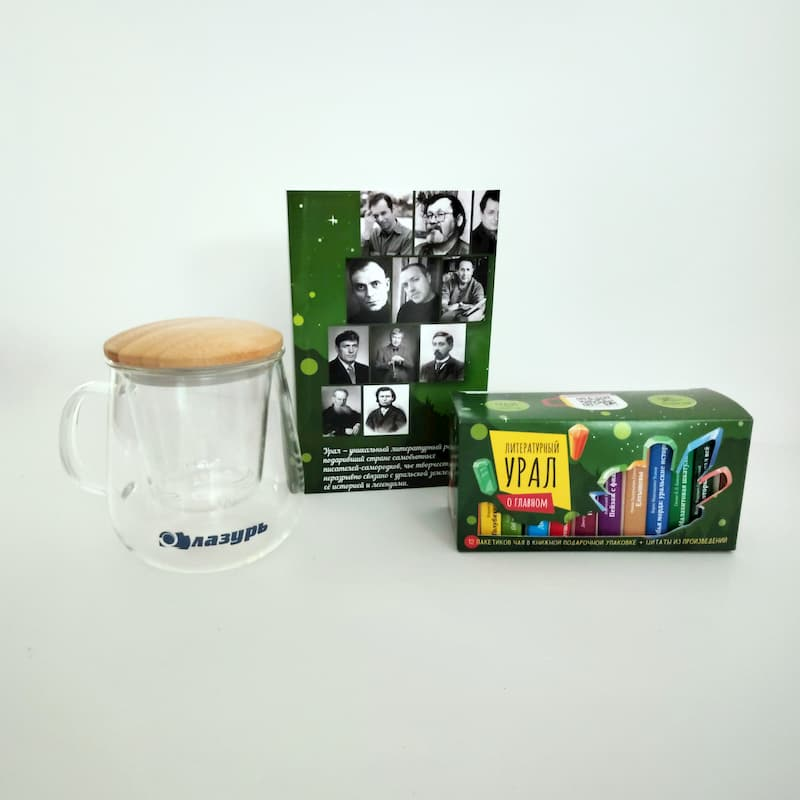
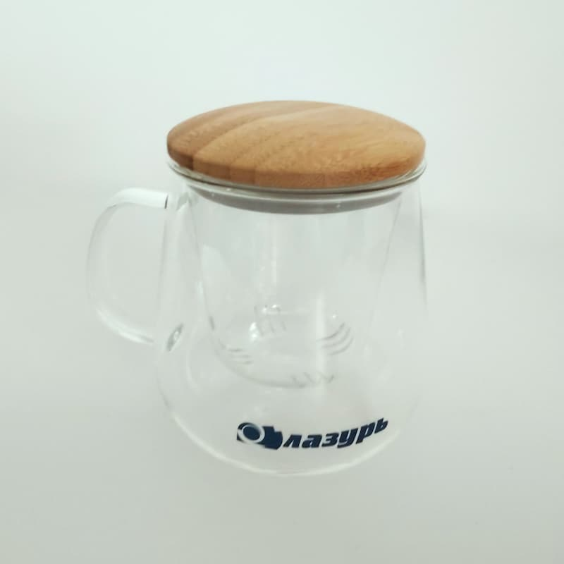
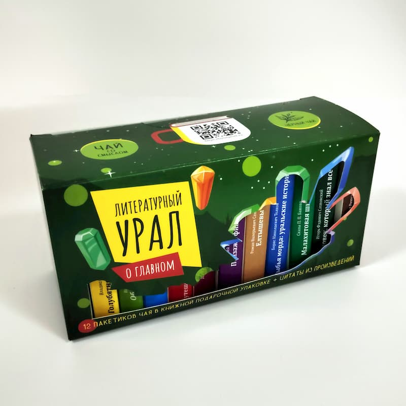
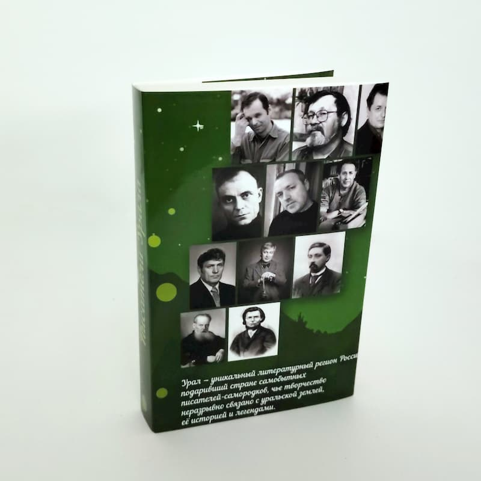

- Главная /
- Статьи /
- 23 февраля
Мужской характер и уральский характер: как мы поздравляли коллег с 23 февраля
В типографии «Лазурь» работают люди с тонким вкусом и твердым характером. И то, и другое, как известно, закаляется на Урале. В этом году, выбирая подарки для наших мужчин к 23 февраля, мы решили не искать легких путей, а собрать нечто особенное — настоящее, душевное и со смыслом.

В итоге получился не просто набор, а настоящий литературный вечер в коробке. Мы решили, что лучший подарок для защитника — это возможность отдохнуть душой за хорошей книгой и чашкой ароматного чая.
Что скрывала наша праздничная упаковка?
Внутри каждого подарка наших коллег ждали:
-
Кружка. Вместительная, крепкая, как рукопожатие настоящего друга.

-
Авторский чай. Согревающий и ароматный, чтобы длинными уральскими вечерами
было уютно листать страницы.

-
Книга уральского писателя. Мы специально выбрали издание, которое пропитано
духом нашего края. Ведь в «Лазури» мы знаем толк не только в печати, но и в хорошей литературе.

Отдельная гордость — упаковка. Мы вложили в неё всю душу дизайнеров. Она получилась лаконичной, стильной, с интересным текстом-посвящением: «Хорошая книга к хорошему чаю». Эта фраза стала лейтмотивом праздника.

Поздравляем всех мужчин «Лазури»! Желаем вам побед не только в работе, но и в мире больших историй. Пусть у вас всегда будет время на крепкий чай и хорошую книгу!